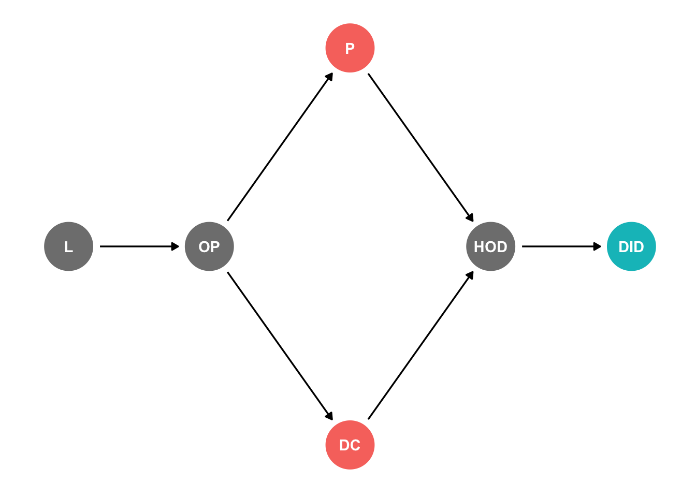
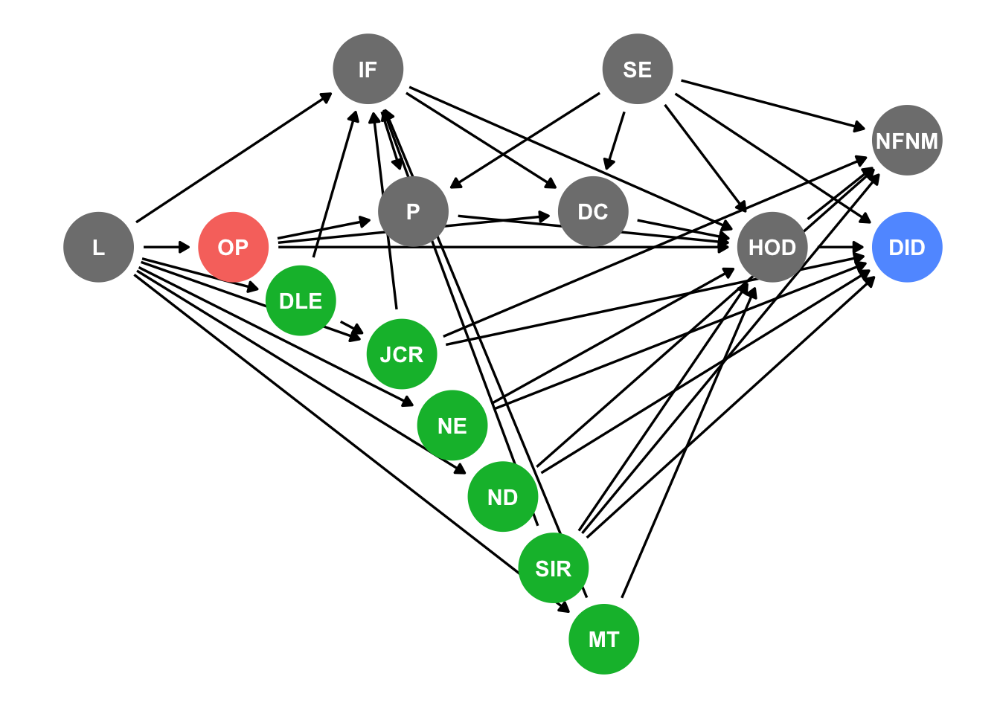

Warning: Paket 'ggdag' wurde unter R Version 4.2.3 erstellt
Attache Paket: 'ggdag'Das folgende Objekt ist maskiert 'package:stats':
filterWarning: Paket 'ggdag' wurde unter R Version 4.2.3 erstellt
Attache Paket: 'ggdag'Das folgende Objekt ist maskiert 'package:stats':
filterThe opioid crisis, with its high number of overdose fatalities, poses a significant public health challenge. A proposed strategy to address this crisis is the legalization of illicit opioids. This paper critically reviews Darke and Farrell’s study “Would legalizing illicit opioids reduce overdose fatalities? Implications from a natural experiment,” from a causal inference perspective.
Darke and Farrell explore the impact of changes in drug purity and composition on overdose rates, aiming to assess the potential effects of legalizing heroin. However, this review highlights the need for a more rigorous causal analysis. By examining the study’s theoretical foundations, this review emphasizes the intricate causal mechanisms linking heroin legality, overdose rates, and confounding factors. It underscores the significance of associated risk factors when estimating the effects of heroin legalization on overdose fatalities. The data used by Darke and Farrell primarily rely on Drug Induced Deaths (DID) and overdose cases, raising concerns about potential bias and the limited representation of the target population. Furthermore, the study overlooks subgroup effects, and there is a lack of adequate control for confounding variables. Similar concerns are to be raised with regard to their proposed natural experiment.
To address these limitations, this review suggests potential remedies, including the use of quasi-experimental methods, counterfactual scenario analysis, and the incorporation of comprehensive variables in the analysis. These approaches can enhance our understanding of the complex relationship between heroin legality and overdose fatalities, facilitating the development of evidence-based policies to combat the opioid crisis more effectively.
In conclusion, this review underscores the importance of a robust causal analysis when investigating the potential impact of legalizing illicit opioids on overdose fatalities. By addressing the study’s limitations and proposing methodological improvements, we can deepen our comprehension of the opioid crisis and inform more effective interventions to mitigate overdose rates.
In the first part of the paper, the authors claim to examine ‘the extent to which any change in legal access to heroin would affect overdose rates’. According to them, investigating ‘drug purity and drug impurity as major causes of overdose’ is sufficient to falsify this claim. Before delving into the natural experiment analysis proposed by the authors in the second half of their paper, we will closely examine the claimed causal mechanism of the study. For this purpose, we visualize their model in the following DAG:

| Symbol | Meaning |
|---|---|
| L | Legality |
| OP | Opioid Provision |
| P | Purity |
| DC | Drug Components |
| HOD | Heroin Overdose |
| DID | Drug Induced Death |
In a paper on a related topic, Unick, et al. reviewed literature on causes for high risk of heroin overdoses. They distinguish three types of high risk variables that are subsequently added to the simplified DAG developed above:
Individual Factors (IF)
Risk Environment (RE)
Social Environment (SE)
By examining the DAGs below, it becomes clear that estimating the effects of heroin legalization is an extremely complex task. Individual Factors, Social, and Risk Environment behave as mediators, colliders and confounders. In the DAGs below, we included 15 additional variables all of which are well established risk factors for overdosing, we briefly discuss a selection of these relationships below.

| Symbol | Meaning |
|---|---|
| L | Legality |
| OP | Opioid Provision |
| RE | Risk Environment |
| SE | Social Environment |
| IF | Individual Factors |
| P | Purity |
| DC | Drug Components |
| NFNM | Non-Fatal Near Misses |
| HOD | Heroin Overdose |
| DID | Drug Induced Death |
Besides polydrug use (PDU), rapid changes in heroin tolerance are among the most common individual level causes for an overdose. Reasons for such tolerance changes include incarceration (I), relapse following drug treatment (R), or infrequent heroin use (IHU). All of these variables interact with legal access to heroin and its subsequent effects. For instance, legalization eases access and therefore reduces the risk for users to experience involuntary infrequent heroin use due to unreliable availability on the black market. Similarly, legal access to heroin reduces the risk of incarceration due to acquisitive crime.

| Symbol | Meaning |
|---|---|
| L | Legality |
| OP | Opioid Provision |
| RE | Risk Environment |
| SE | Social Environment |
| P | Purity |
| DC | Drug Components |
| NFNM | Non-Fatal Near Misses |
| HOD | Heroin Overdose |
| DID | Drug Induced Death |
| PDU | Polydrug Use |
| LOE | Lack of Experience |
| I | Incarceration |
| IHU | Infrequent Heroin Use |
| R | Relapse Following Drug Treatment |
Legalization (L) has not only an effect on criminal justice risk (JCR) via potentially high-risk incarceration. Limiting legal access to heroin is also linked to ‘higher levels of drug law enforcement (DLE) [that in turn] have been linked to increased risk of overdose deaths [16] […] increased criminal justice risk (JCR) associated with drug use leads to specific behaviors, e.g. not calling for emergency help [(i.e. calling 911 in the United States) […] following a witnessed overdose, which increase individual harm associated with drug use [17].’ It becomes clear that ‘risk environment represents a number of structural components that moderate the relationship between individual factors and injection drug users’ (IDUs’) health’ that should be considered when discussing heroin legalization. Lastly, variables related to the risk environment, such as access to naloxone distribution (ND) or safe injection rooms (SIR), can have their effectiveness in reducing the likelihood of fatal heroin overdoses mediated by legality.
Warning: Removed 1 rows containing missing values (`geom_dag_point()`).Warning: Removed 1 rows containing missing values (`geom_dag_text()`).
| Symbol | Meaning |
|---|---|
| L | Legality |
| OP | Opioid Provision |
| SE | Social Environment |
| IF | Individual Factors |
| P | Purity |
| DC | Drug Components |
| NFNM | Non-Fatal Near Misses |
| HOD | Heroin Overdose |
| DID | Drug Induced Death |
| DLE | Drug Law Enforcement |
| CJR | Criminal Justice Risk |
| NE | Needle Exchange |
| ND | Naloxone Distribution |
| MT | Methadone Treatment |
| SIR | Safe Injection Rooms |
The paper’s title claims to provide inside on the question whether ‘legalizing illicit opioids [would] reduce overdose fatalities’. This would mean to estimate the total effect a change on legality had on the number of heroin induced overdose deaths. As previously pointed out, the effect of legalizing heroin on the cases of fatal overdoses involves numerous factors that mediate, confound or collide and would need careful consideration when estimating the overall effect. Looking at the dags above however, it becomes clear that at least in the first part of the paper, this is not in fact the estimant explored. Instead, the authors decided to focus on what they claim to be the two most commonly assumed drivers for decreasing fatality rates - purity and drug composition. What they investigate is the indirect effect of legalizing heroin on fatal overdoses mediated by these two variables, focusing solely on the arrows from Purity and Drug Components to Drug Induced Death. Furthermore, they limit the initially stated general claim to ‘provision in the manner of substances such as alcohol,’ thereby excluding institutional settings like supervised consumption rooms. Combining these limitations, the study therefore aims to estimate the potential impact of legalization, without additional framework measures, on changes in the purity and adulterant levels, and how these changes would affect the immediate mortality rate due to overdose. Contrary to the authors’ claim, the research does not primarily focus on the overall effect of legalizing heroin on fatal overdoses.
The preceding discussion highlighted several problematic simplifications and underscored that the paper’s estimand is considerably more limited than implied by its title. In the subsequent section, we would like to turn to a different aspect, namely the data the authors based the estimation of these effects on. In the initial section of the paper, the researchers cite various sources, many of which are beyond our scope. However, a common feature of the data analyses leading to their conclusions seems to be the focus on cases of (fatal) overdoses. By solely focusing on those cases, they exclusively consider cases that, in the simplified DAGs above, correspond to a specific value in the binary variables Heroin Overdose (HOD) and Drug-Induced Death (DID). However, estimating the (total, direct, or indirect) effect of legalizing heroin would require defining the population as the population of heroin addicts. Utilizing data primarily consisting of HOD or DID cases is likely to yield a sample that does not adequately represent this target population, and this consideration needs to be taken into account.
Another issue may arise when comparing different subgroups of heroin users. When the different variables discussed interact with the effect of legalization as described above, it becomes impossible to precisely estimate the effect strength of the targeted estimant. This becomes evident when the authors attempt to discuss, for instance, the impact of varying levels of heroin purity on the tolerance of heroin users who have experienced periods of opioid abstinence, in comparison to heroin users without such abstinence. If subgroups are not taken into account for controlling, effect estimates may be biased. Abstinence and its effect on tolerance are are intricately intertwined with numerous other risk factors. The authors indeed acknowledge that there ‘are situations in which tolerance plays a more significant role, specifically after periods of opioid abstinence’. As they do not control for such variables in their limited model however, their analysis is insufficiently fine-grained to estimate the difference of effect strength; and they simply state that ‘such cases constitute a small minority, and it is questionable in the absence of opioid tolerance whether or not variations in purity are of relevance, as the risk of death is so high.’
The issue becomes even more complex since being a member of a socially excluded group (OSE) implies a higher risk of overdose, but also increases the risk and fear of Drug Law Enforcement (DLE) and incarceration. Hence, legalization can be anticipated to be mediated by all of these variables. Behavioral changes might differ across groups since the effect of legalization on their criminal justice risk varies. Similar effects can be expected concerning incarceration. The key point is that, in addition to their simplified DAG, there are further problematic implications regarding the data referenced in the article. It becomes unclear to what extent the data is suitable for controlling such distinct subgroup effects.
In addition to their initial discussion of purity and drug composition, the authors furthermore suggest to consider the US opioid crisis a natural experiment to estimate the effects of legalizing heroin on the number of fatal overdoses. Legal opioids would be real-world examples of widespread licit opioid provision, allowing investigation into how the distribution of legal heroin would unfold. Their approach, however, seems to be mostly rely on the assumption that ‘the toxicological profile of these deaths [fatal overdoses caused by licit opioids] is consistent with that of heroin’. However, a direct comparison of the overall effect across groups, as seemingly implied here, would only be valid if the user groups of different substances were equally composed. Once different user groups for legal painkillers and heroin are assumed, transferring assumptions about effects would necessitate understanding the relationships of variables within their respective DAGs.
The authors are not completely clear about the methodological considerations behind their comparisons. It seems reasonable to assume that the user group of heroin and licit opioids are not identical in terms of overdose risk factors outlined in the DAGs above. While the researchers claim comparability between one group of typical users with high risks of fatal licit opioid overdoses and typical heroin fatalities, the common trade they point out is “concomitant use”. Without further investigation of the numerous additional interaction variables, such claims have to be treated with caution. These suspicions are further strengthened by the authors´ description of the second group of common fatal overdose users, namely older chronic pain patients; this group can be expected to be distinct from the typical overdose heroin user. It becomes once again clear that comparing the two populations of opioid users is hardly justifiable without further controlling.
In addition to these concerns regarding the theoretical backing and population composition, one has to carefully consider the sample composition for the natural experiment. Similar like in the paper´s first section, the researchers seem to primarily sample data from (fatal) overdoses. Thus, they only take into account cases that have a specific value for the respective binary variables. Thus, the sample at their hands is not representative of all licit opioid users but strongly biased towards users with (fatal) overdoses.
Lastly, it is worth noting that the claimed natural experiment setting does not take into account what triggers the increase in overdose fatalities Those opioids in question were legally available before there increased use, that legality is not the (only) variable that changed in the DAG. Instead, the authors state that as “prescription rates have increased, however, poisonings have increased dramatically”. This puts a different focus on the crucial factors then a binary legislation variable as suggested in the paper´s title. The idea behind the natural experiment seemed to have been to simulate a counter-factual situation where a change in legalization from illegal to legal would change overdose numbers. Again, this would make it all the more crucial to ensure that all relevant variables are included in the assumed DAG in order to ensure both identification of crucial factors and transferability between subgroups.
To strengthen their analysis, the authors could employ quasi-experimental methods. One such method is a difference-in-differences (DiD) approach, which compares the change in outcomes over time between a group that experienced an intervention (or policy change) and a group that did not. For instance, this approach could analyze the variation in overdose rates across states with different opioid prescription policies over time. Additionally, using instrumental variable methods could help deal with unobserved confounding variables. Alternative data sources, such as surveys or patient records, could also help offer a more representative sample of the opioid user population.
A detailed counterfactual scenario analysis could enrich the study. One example might involve using data from jurisdictions like Portugal, where drug use has been decriminalized. By comparing overdose rates before and after this policy change and adjusting for other relevant factors, the authors could model the potential impact of similar policies in other contexts. Another counterfactual could involve synthesizing a control group via methods like propensity score matching, simulating a parallel universe in which opioid policy remained unchanged.
Time-varying confounders such as risk environment factors and social causes require a dynamic approach. One way is to apply Matthew Blackwell’s framework for dynamic causal inference. This framework employs marginal structural models (MSMs) and inverse probability of treatment weighting (IPTW) to estimate causal effects of interventions considering time-varying confounders.
MSMs estimate causal effects in observational studies, adjusting for confounders affected by previous treatment. IPTW corrects for treatment-selection bias, creating a ‘pseudo-population’ independent of measured confounders. Applying this to the study involves constructing MSMs capturing dynamic relationships between heroin use, social, economic and legal status, overdose rates, and other time-varying confounders. Using IPTW, the model weighs each observation by its probability of receiving treatment given observed confounders, enabling accurate estimates of the causal effects of legalizing heroin.
Future research should adopt a comprehensive, multidimensional approach, incorporating variables such as healthcare access, drug potency, polydrug use prevalence, and socio-economic factors, along with the legal status of heroin. Coupling this with causal models like Directed Acyclic Graphs (DAGs) will yield a more holistic understanding of heroin use and the associated risks. Sensitivity analysis should also be employed to scrutinize the robustness of the findings, ensuring that the results are reliable despite potential confounding variables.
While propensity score matching has been a common technique for estimating causal effects in observational studies, it’s crucial to reassess its efficacy and reliability. Possible shortcomings and biases introduced by propensity score matching should be critically examined, and alternative approaches to dealing with confounding should be explored.
Furthermore, future studies could consider design-based methods such as instrumental variable methods. These methods can provide more credible causal estimates by effectively creating counterfactual scenarios, thus increasing the validity of research findings and providing a more robust basis for policy implications.
In conclusion, the study by Shane Darke and Michael Farrell, titled “Would legalizing illicit opioids reduce overdose fatalities? Implications from a natural experiment,” provides valuable insights into the complex relationship between heroin legality and overdose rates. However, this review highlights several areas that require further attention to strengthen the study’s findings and implications.
The analysis emphasizes the limited estimant explored in the paper, focusing primarily on the indirect effects of heroin legalization mediated by purity and drug composition. The research findings suggest that changes in these variables, without additional framework measures like institutional settings, may not effectively reduce overdose rates. However, it is important to note that the study’s focus is not on the overall effect of legalizing heroin on the total number of fatal overdoses.
Critically examining the data sources used, the review raises concerns about the representativeness of the sample, which primarily includes cases of Drug Induced Deaths (DID) and overdoses. This limitation implies that the sample may not accurately reflect the target population of heroin users, potentially introducing bias in the conclusions drawn.
While the authors propose the opioid crisis in the US as a natural experiment, caution is warranted in comparing the effects of legal pharmaceutical opioids with those of legalized heroin. The transferability of findings between these two substances is not adequately supported, given the potential differences in user profiles, usage patterns, and associated risk factors.
To strengthen the analysis, future research could employ quasi-experimental methods, control for confounding variables, and conduct counterfactual scenario analyses. Additionally, incorporating more comprehensive data, considering multiple dimensions of the opioid crisis, and utilizing causal models like Directed Acyclic Graphs (DAGs) would enhance our understanding of the complex interplay between heroin legality and overdose fatalities.
While the paper contributes valuable insights, further research is needed to address the identified limitations and refine our understanding of the implications of legalizing illicit opioids on reducing overdose fatalities. These endeavors will guide evidence-based policies and interventions to effectively combat the ongoing opioid crisis.
Social Causes
Finally, social causes need to be taken into account, as they can significantly influence the impact of the factors mentioned above on overdose and fatality risks. Experiencing poverty (EB), homelessness (HL), and other forms of social exclusion (OSE) - all listed as risk factors for drug overdose - can mutually reinforce one another. Furthermore, these social causes interact with risk environment-related factors (RE), such as increased criminal justice risk, or the related individual factor (IF) of incarceration. Similarly, individuals belonging to the mentioned social groups face an increased risk of involuntary infrequent heroin access. All the indicated social causes act as mediators, colliders, and/or confounders in how legalization (L) would impact fatal overdose cases (DID).